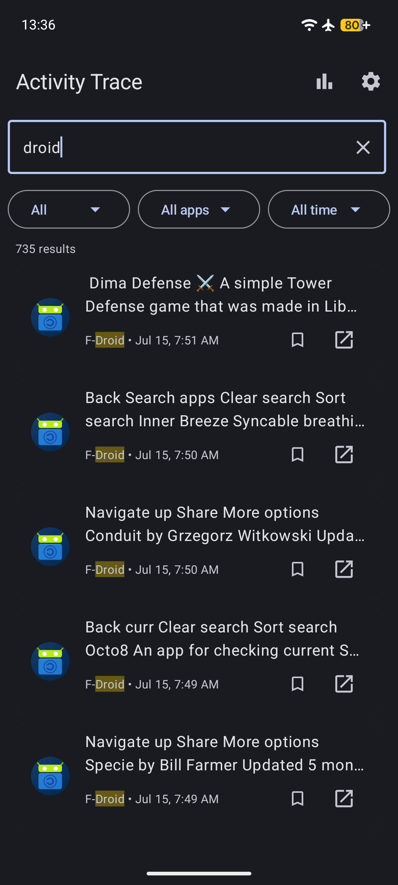
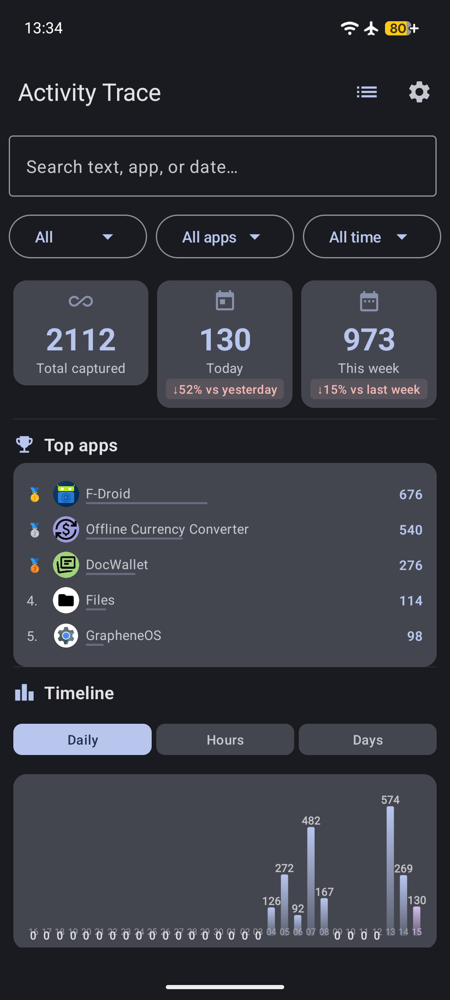
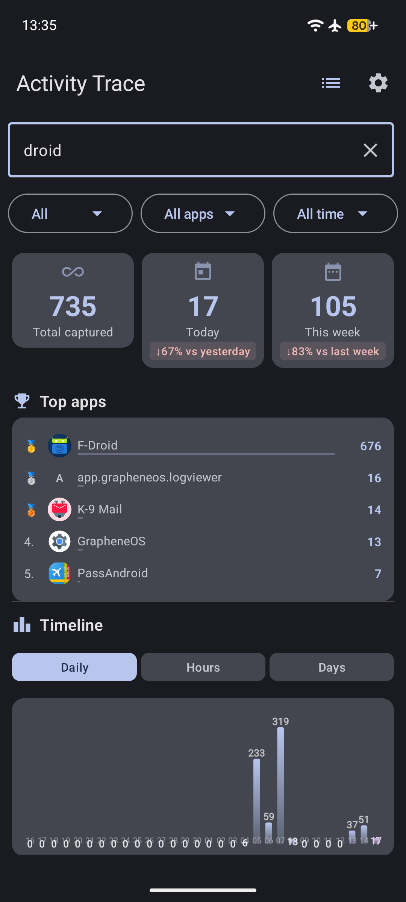
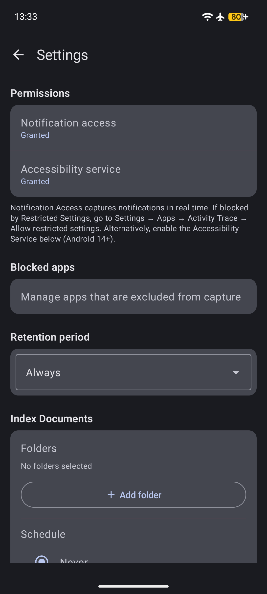
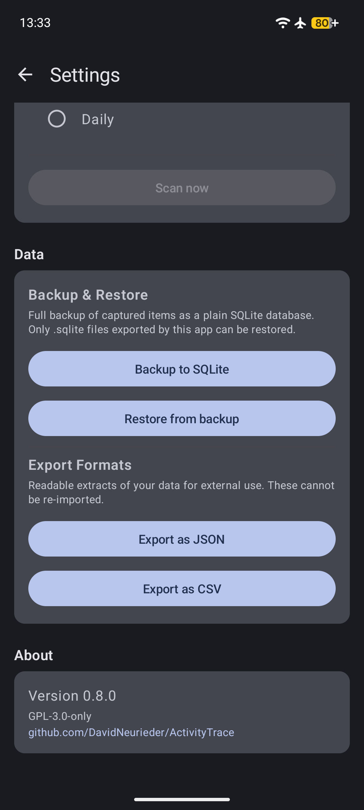

Get it on F-Droid
Get it on F-Droid
Remember everything on your device
Search anything
Notifications, accessibility screen captures, and indexed files — one search across them all.
Natural language
Query with yesterday, last week, in:signal, or type:notification.
Prefix & wildcard
test matches testing; *error matches fatal error. Matches are highlighted.
Statistics
Summary cards, timeline charts, top apps, and content-type breakdown.
Full encryption
SQLCipher + Android Keystore (StrongBox on capable hardware). AES-256-CBC at rest.
System app blocking
Capture from system apps is disabled by default — you choose what gets indexed.
How it stays private
Capture on device
NotificationListener, AccessibilityService, and SAF file indexing feed a unified capture pipeline — no server involved.
Encrypt at rest
Everything is stored in a SQLCipher database secured by the Android Keystore, and erased on a configurable retention schedule via WorkManager.
Zero network
No internet permission, no telemetry, no analytics, no crash reporting. F-Droid only — no Google Play Services.
Zero-trust by default: your data never leaves the device, and only you can search it.
Screenshots





Get it on F-Droid
Free and open source (GPL-3.0). Install from F-Droid — no Google Play account needed.
Build from source
./gradlew assembleDebug # debug build (unminified)
./gradlew assembleRelease # release build (minified, ProGuard)Min SDK 26 (Android 8.0), target SDK 36. Requires JDK 17 and Android SDK 36.